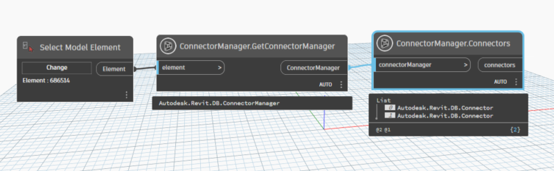
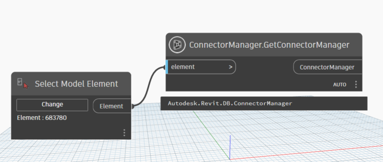
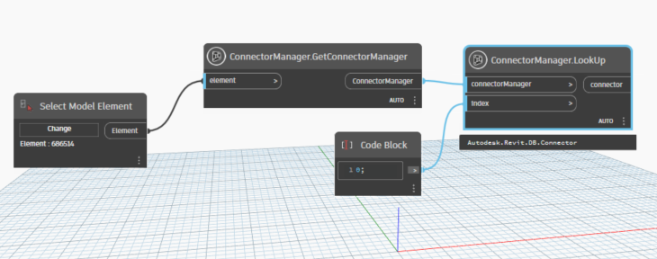
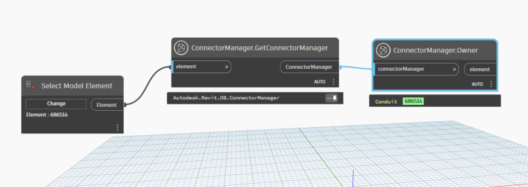
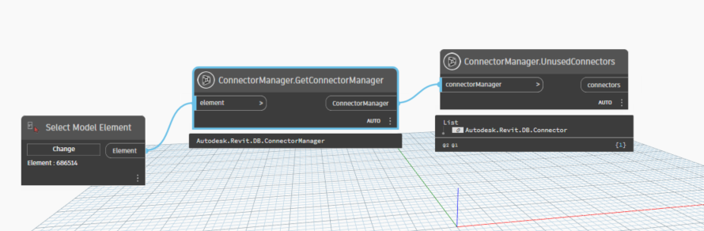

Class ConnectorManager
- Namespace
- OpenMEPRevit.ConnectorManager
- Assembly
- OpenMEPRevit.dll
Provides access to the Connector Manager
public class ConnectorManager- Inheritance
-
ConnectorManager
- Inherited Members
Methods
Connectors(ConnectorManager?)
Return all the Connectors of the Connector Manager.
public static List<Connector?> Connectors(ConnectorManager? connectorManager)Parameters
connectorManagerConnectorManagerconnector manager
Returns
- List<Connector>
a collections of connector manager
Examples

GetConnectorManager(Element?)
return connector manager of element
public static ConnectorManager? GetConnectorManager(Element? element)Parameters
elementElementelement
Returns
- ConnectorManager
Autodesk.Revit.DB.ConnectorManager
Examples

LookUp(ConnectorManager, int)
return connector by index
public static Connector LookUp(ConnectorManager connectorManager, int index)Parameters
connectorManagerConnectorManagerconnector manager
indexintindex of connector
Returns
- Connector
connector
Examples

Owner(ConnectorManager)
property is used to retrieve the owner of the Connector Manager.
public static Element Owner(ConnectorManager connectorManager)Parameters
connectorManagerConnectorManager
Returns
- Element
element owner
Examples

UnusedConnectors(ConnectorManager)
return UnusedConnectors from connector manager
public static List<Connector> UnusedConnectors(ConnectorManager connectorManager)Parameters
connectorManagerConnectorManagerconnector manager
Returns
- List<Connector>
connectors
Examples
